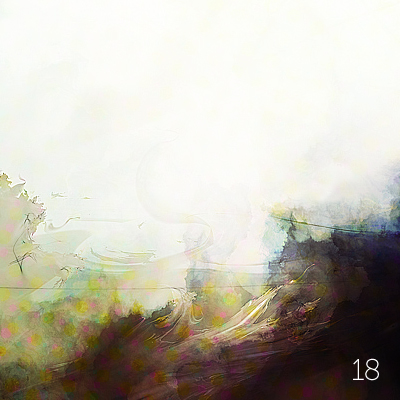

Interactive record. Each ring of grooves is a song. Press Enter to focus it and Escape to leave. Use the arrow keys to move between songs, and Enter to play one.
Tracklist
Running order
14 songs
Take it home
The inlay card
Print it, cut it out, and fold it into a cassette case. You can also copy the tracklist and rebuild the mix wherever you listen.
Side A
- Boo Pinback
- When I Am Gone Sparrow House
- Second Lover Noah And The Whale
- No Love The Get Up Kids
- No Distance Left To Run Blur
- It’s Cool, We Can Still Be Friends Bright Eyes
- Warning Sign Coldplay
Side B
- I Didn’t Understand Elliott Smith
- Hurt Johnny Cash
- No Children The Mountain Goats
- Asshole dios Malos
- Erase Me Kid Cudi
- Songbird (originally by Fleetwood Mac) Glee Cast
- Blue Would Still Be Blue Guillemots
Eighteenth
No.018
Eighteenth
June 2011
Monday Music Mix
A / B · 14 songs
Archive